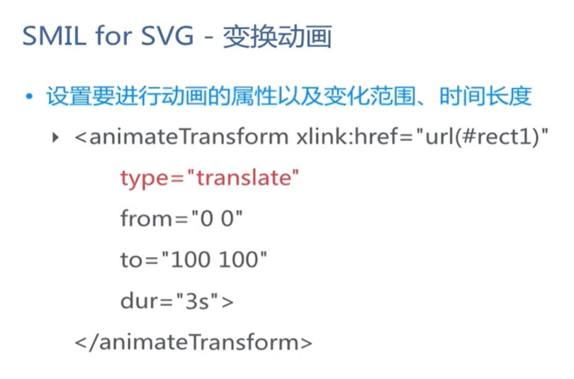

<animateTransform>动画元素变动了目标元素上的一个变形属性，从而允许动画控制转换、缩放、旋转或斜切。
- attributeType - 指定目标属性和它相对应的值处于哪个命名空间里，属性值：CSS | XML | auto(默认)
- CSS：指定attributeName的值是一个CSS属性名。
- XML：指定attributeName的值是一个CSS属性名。
- auto(默认)：编译器将把attributeName匹配到目标元素的一个属性。用户代理先搜索CSS属性列表以找出一个匹配的属性名，如果找不到，再为这个元素搜索默认XML命名空间。【出于性能考虑，不推荐用！！】
- attributeName - 需要被改变的属性名
- by - 指定将在动画期间修改的属性的相对偏移值。
- from - 被修改属性的初始值
- to - 被修改属性的最终值。
- type - 应该属性是一个类属性，他在不同的使用语境下有不同的意思。
- 对于<animateTransform>元素 ， 它决定了那些随时间变化的值的转换的类型
- 对于<feColorMatrix> 元素， 它指明了矩阵运算的类型。关键词 表明一个全 5x4 矩阵的值会被提供.其他关键字快捷方式代表允许不执行复杂矩阵运算下使用常用颜色。
- 对于<feFuncR>， <feFuncG>， <feFuncB>， 和<feFuncA> 元素， 它指明了组件传递函数的类型。
- 对于<feTurbulence> 元素， 它表示应以噪声函数还是湍流函数执行过滤。
- 对于<style> 和 <script> 元素， 它定义了元素内容的类型。
- dur - 动画的简单持续时间（动画时长），属性值：时钟值|不定
- 时钟值 指定简单持续时间的时长。值必须大于0。可以用小时（h）、分钟（m）、秒（s）、毫秒（ms）表达这个值。可以组合这些时间表达式以提供一个复合的持续时间，比如这样：或者这样：。hh:mm:ss.iiimm:ss.iii
- 如果一个动画元素不带有属性，简单持续时间就是无限期的。请注意：如果一个简单持续时间是无限期的，则插值不能起作用（虽然它对 <set> 元素依然是有用的）
- begin - 定义动画应何时开始或何时应丢弃元素。(可设置动画延时执行)
- fill - 填充，属性值：freeze 动画执行结束后，停留在最后一帧
- repeatCount - 指定动画重复的次数。它也可以包括用分数值表示。它的值必须大于0，属性值：数值 | indefinite（无限期）